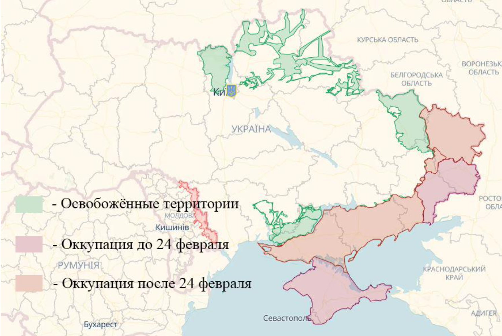
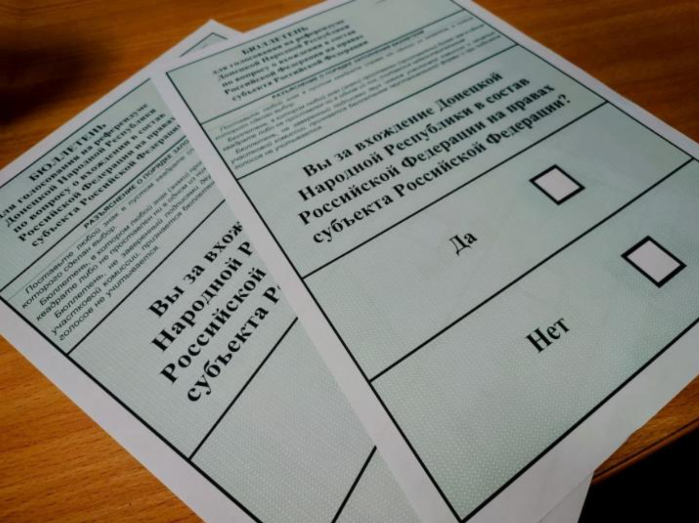
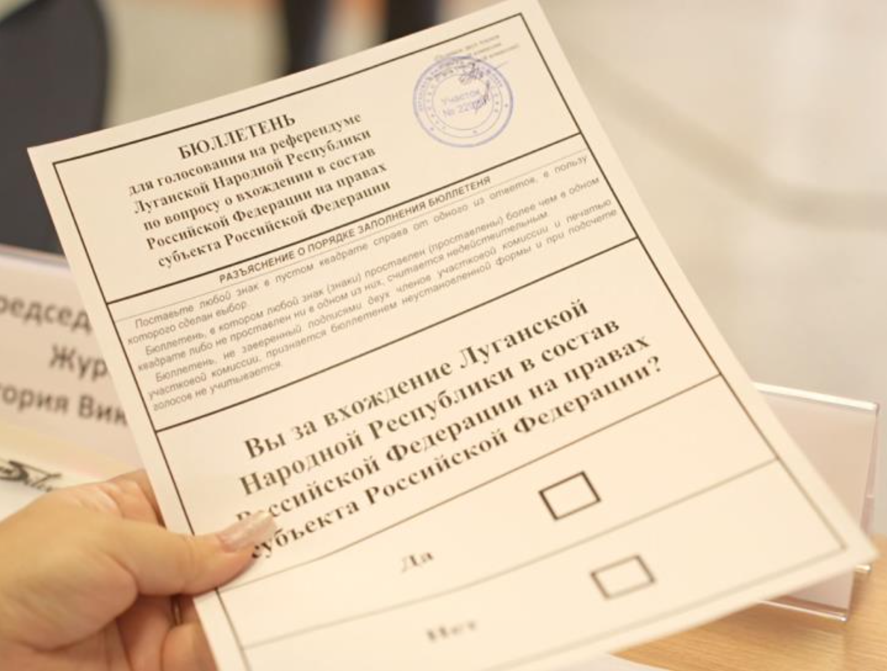
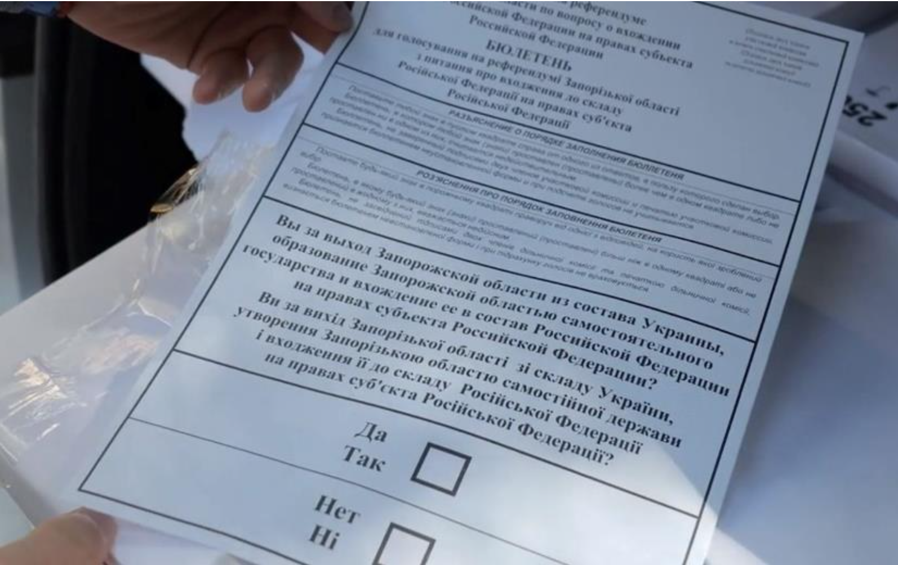
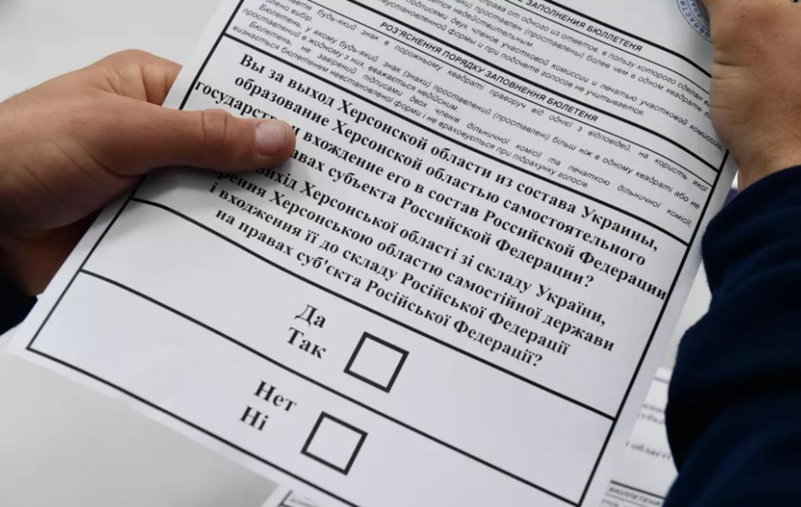

#/media/%D0%A4%D0%B0%D0%B9%D0%BB:2022_Russian_Invasion_of_Ukraine_animated.gif){kind=link}
"В наши планы не входит оккупация украинских территорий".

Так же:
Текущие события
1. Фронт
По состоянию на начало мая 2023 года войска Российской Федерации покинули большую часть оккупированных земель Украины начиная с 24 февраля 2022 года.

Карта взята с сайта DeepStateMap по состоянию на 13.05.2023 года.
Российские войска полностью покинули Киевскую, Сумскую, Черниговскую, Николаевскую и Харьковскую области. Ушли с острова Змеиный и правого берега реки Днепр в Херсонской области. Российской Федерации не удалось захватить ни одной области в её административных границах (как показывается на официальных картах). Наглядно можно увидеть здесь и здесь.
После отступления с правого берега реки Днепр в Херсонской области РФ потеряла единственный, захваченный с момента 24 февраля 2022 года, областной центр Украины, а также любые перспективы для дальнейшего захвата правобережных территорий Украины.
Российская сторона не признаёт эти отступления в качестве военных поражений. В массах данные поражения определяют как «жест доброй воли», «тактическое отступление» и т.д.
В данном контексте Российская Федерация поступила правильно с точки зрения обозначения своих целей для СВО. Всё озвученное Президентом Российской Федерации Путиным В.В. является не более чем лозунгом и абстрактным понятием, которое не имеет фактического начала или конца.
В ходе боёв обе стороны теряют личный состав (количество стороны не называют) и военную технику. Со стороны Украины это всё оправдано освобождением своих территорий. Со стороны Российской Федерации это выглядит как попытка захвата, которая провалилась. Однако многие считают, что это «хитрый план» с целью отвлечения войск Украины.
Количество подтверждённой (фото и видео) уничтоженной российской техники посмотреть здесь.
Количество подтверждённой (фото и видео) уничтоженной украинской техники посмотреть здесь.
2. «Референдумы»
В 2022 году Российская Федерация пошла по тому же пути, что и в 2014 году с аннексией Крыма. На оккупированных территориях провели «референдумы» с целью попытки легитимизации захваченных территорий Украины в качестве новых субъектов Российской Федерации.
Хотя в своём обращении 24 февраля (а до этого в обращении от 18.03.2014) Путин В.В. заявил следующее:

Уже 23 – 27 сентября 2022 года на оккупированных территориях прошли «референдумы о вхождении в состав Российской Федерации». Регионы, в которых проходили «референдумы», были следующие: ДНР, ЛНР и оккупированные части Херсонской и Запорожской областей.
Отдельно отметим, что на оккупированных территориях Харьковской области также продвигали лозунги о том, что «Россия здесь навсегда». Однако данный регион был деоккупирован и на его территории подобные мероприятия не успели провести.
В ходе референдума задавался 1 вопрос (однако сформулирован для разных регионов по-разному):
В ДНР

В ЛНР

В Запорожской области

В Херсонской области

Результаты «референдумов» были следующие:
27 сентября 2022 года ЦИК РФ (на основании чего российские структуры проводят подсчёты голосов на «независимых» и оккупированных территориях – загадка) заявил о следующих результатах «референдумов»: в ДНР за присоединение к России якобы составило 99,23 %, в ЛНР – 98,42 %, в Херсонской области – 87,05 %, в Запорожской – 93,11 %. Реальное число проголосовавших неизвестно. Россия не контролирует полностью ни один из регионов, а из многих населённых пунктов на оккупированной территории уехало большинство жителей.
3. Признание областей частью Российской Федерации
Для соблюдения закона No 6-ФКЗ от 17 декабря 2001 года «О порядке принятии новых регионов в состав РФ» были провозглашены (по итогам референдума) независимая Запорожская и Херсонская области (стоит отметить отсутствие какой либо нормативной базы подтверждающей это). Президент России Путин В.В. признал их независимость. Ранее были признаны ДНР и ЛНР, а также данная процедура была проведена и на территории Крыма.
На основании проведенных «референдумов» и голосования в Госдуме по «принятию в состав» оккупированных территорий 30 сентября 2022 года были подписаны договоры о вхождении оккупированных регионов Украины в состав Российской Федерации.
О легитимности проведённых «референдумов» говорить не приходится. В правовых нормах Российской Федерации отсутствуют законные основания для проведения каких-либо подобных мероприятий на территории других стран.
В международном праве это называется аннексия (часть военной агрессии). Юристы по международному праву считают нарушением международного права мероприятия, которые провела Российская Федерация на территории Украины.
Важным моментом в данном вопросе есть то, что российские власти изначально вообще не называли «новых» границ Российской Федерации. Так, к примеру, пресс-секретарь Президента России Дмитрий Песков не смог назвать, в каких границах признана независимость Херсонской и Запорожской областей Украины.
В дальнейшем появились карты Российской Федерации с «новыми» регионами, на которых граница Российской Федерации проходит вдоль административных границ аннексированных территорий.
Интерес данный факт вызывает тем, что многие территории Российская Федерация никогда не контролировала. Эти карты могут свидетельствовать о реальных планах по завершению СВО, однако какими средствами Российская Федерация будет их достигать остаётся загадкой, так как с момента аннексии новых регионов, она уже потеряла часть «своих» земель.
Мировое сообщество практически единогласно отказалось признавать аннексию украинских территорий Российской Федерацией.
4. Уничтоженные города
Основной стратегией захвата городов Российской Федерацией является «лобовая» атака, в ходе которой полностью уничтожаются города и сёла. Исключением является город Херсон и часть городов в Херсонской и Запорожской областях. Это связано с тем, что у Украины в начале войны не было средств и сил для обороны этих городов, и оттуда просто отступили без боя.
Парадоксальным в этой ситуации является то, что самые серьезные разрушения были нанесены городам в Донецкой и Луганской областях. Именно про этот регион российские власти говорят в контексте того, что там проживают «русские», которые хотят жить с Российской Федерацией.
В Донецкой области были полностью или частично уничтожены следующие города и сёла: город Мариуполь, село Яковлевка, город Соледар, город Бахмут, село Покровское, город Лиман, город Волноваха, город Марьинка.
В Луганской области были полностью или частично уничтожены следующие населённые пункты: город Рубежное, город Попасная, город Кременная, город Северодонецк.
Сильно пострадала Харьковская область: город Купянск, город Изюм, а также сам Харьков.
В Киевской области были сильные разрушения в следующих городах: город Ирпень, посёлок Гостомель, село Горенка.
На данный момент имеются сильные разрушения в городе Херсон и других регионах Украины. Количество разрушений постоянно растёт.
Наглядно посмотреть состояние городов после российской агрессии можно здесь.
В контексте заявлений о том, что сейчас идут восстановительные работы в каких-то оккупированных городах, нужно понимать, что жилищный фонд и инфраструктура города вторичны. В города люди едут только в том случае, если там есть возможность заработка денег. Рабочие места в городах не появляются, а находиться там очень опасно. На территориях городов имеется большое количество неразорвавшихся снарядов, которые несут угрозу жизни жителей.
5. Военные преступления
5.1 Общее
В данном разделе приведены некоторые военные преступления, направленные против гражданского населения, которые Российская Федерация совершает на территории Украины с 2014 года (если не учитывать сам факт ведения агрессивной войны).
Российская Федерация всячески подавляла «украинские настроения» на территории Донбасса.
В ходе протестов в поддержку Украины был убит 16-летний парень Чубенко Степан Викторович. Людей, которые выходили с украинскими флагами избивали и издевались над ними. В дальнейшем начали создавать различные пыточные с целью подавить все проявления украинства на этих территориях.
После начала полномасштабного вторжения Российская Федерация пренебрегает всеми конвенциями о ведении войны и защите гражданских.
Согласно Женевской конвенции от 12 августа 1949 года о защите гражданского населения во время войны РФ нарушила на оккупированных территориях следующие статьи раздела III. Некоторые из нарушений приведены ниже.
Статья 49 – Воспрещаются по каким бы то ни было мотивам угон, а также депортирование покровительствуемых лиц из оккупированной территории на территорию оккупирующей державы или на территорию любого другого государства независимо от того, оккупированы они или нет.
Президентом Российской Федерации был подписан указ, легитимизирующий депортацию украинцев с оккупированных территорий.
Также имеются частные случаи депортации жителей (пример 1, 2).
В данном контексте стоит отдельно отметить похищение украинских детей – отчёт ОБСЕ. В связи с этим был выписан ордер на арест Президента Российской Федерации Путина В.В. и Уполномоченного при Президенте Российской Федерации по правам ребёнка Львовой-Беловой Марии Алексеевны. ОБСЕ расценивает эти действия как геноцид.
Статья 51 – Оккупирующая держава не сможет принуждать покровительствуемых лиц служить в ее вооруженных или вспомогательных силах. Всякое давление или пропаганда в пользу добровольного поступления в армию воспрещается.
На территории Крыма, ДНР и ЛНР проходили неоднократные призывы людей к участию в войне против Украины.
Статья 53 – Всякое уничтожение оккупирующей державой движимого или недвижимого имущества, являющегося индивидуальной или коллективной собственностью частных лиц или государства, общин, либо общественных или кооперативных организаций, которое не является абсолютно необходимым для военных операций, воспрещается.
В данном вопросе можно упомянуть о вывозе с территории Украины сельскохозяйственной техники и краже зерна.
Отдельно необходимо отметить большое количество нарушений, обнаруженных на освобождённых территориях, которые совершила российская армия. Некоторые из них:
⎯ резня в городе Буча (расследование 1, 2, 3, 4, 5, 6);
⎯ массовые захоронения под городом Изюм.
Есть частные инициативы (пример 1, 2) в расследованиях военных преступлений Российской Федерации на территории Украины против гражданского населения.
На освобождённых территориях регулярно находят братские могилы с захоронениями убитых гражданских (пример 1, 2).
Массовые захоронения в городе Изюм, Харьковской области

Массовые захоронения в городе Буча, Киевской области

5.2 Энергетика Украины и Крымский мост
В контексте военных преступлений нужно упомянуть атаки Российской Федерации по энергетической инфраструктуре Украины. Расследование на эту тему можно прочитать здесь.
Согласно Женевскому перечню принципов по охране водной инфраструктуры энергетическая инфраструктура является вспомогательной в обеспечении гражданских лиц питьевой водой и не подлежит уничтожению или атакам.
Президент Российской Федерации Путин В.В. признал в интервью, что Российская Федерация наносит целенаправленные удары по энергетической инфраструктуре Украины.
В своём ответе он аргументировал это разрушением Украиной Крымского моста. В этом вопросе нужно понимать, что Крымский мост (строительство осуждается резолюцией ГА ООН A/75/L.38 от 3.12.2020) используется для переброски военной техники (источник 1, 2, 3) Российской Федерацией в Крым, затем на территорию континентальной Украины и направляется на фронт для ведения боевых действий. Данный мост является легитимной военной целью (раздел II пункт 6).
5.3 Каховская ГЭС
В ночь на 6 июня 2023 года была разрушена Каховская ГЭС. Это крупнейшая техногенная катастрофа в истории независимой Украины.
На данный момент не удалось достоверно установить, кто именно виновен в произошедшем, однако нужно понимать следующие моменты:
⎯ Каховская ГЭС с самого начала полномасштабного вторжения России в Украину находится под контролем (тем самым Российская Федерация нарушила статью 56 Женевской конвенции) вооруженных сил Российской Федерации;
⎯данное сооружение строилось с учётом возможной войны. Его практически невозможно уничтожить ударами снаружи;
⎯о возможном подрыве ГЭС российской стороной говорилось задолго до самих событий (источник 1, 2, 3);
⎯30.05.2023 года Правительство Российской Федерации постановило (пункт 10) не проводить расследования аварий на гидротехнических сооружениях.
Расследование и хронологию событий, связанных с Каховской ГЭС, в период с 24.02.2022 до момента разрушения можно почитать здесь.
В ходе эвакуации пострадавших украинской стороной вооруженными силами Российской Федерации проводились обстрелы по гражданским лицам.
Европарламент осудил разрушение плотины в Новой Каховке и назвал это военным преступлением, которое совершила Россия (источник 1, 2).
Расследование The New York Times, в котором виновниками называют Россию, можно почитать здесь (русскоязычное описание статьи здесь ). От Reuters – здесь.
Последствия затопления в первый день можно посмотреть здесь и здесь.
В Ванкуверской декларации от 30 июня – 4 июля 2023 года признают уничтожение ГЭС «российскими оккупационными силами».
5.4 Международные оценки
С начала полномасштабного вторжения Российской Федерации Миссия ОБСЕ (первая миссия, вторая миссия) фиксирует многократные нарушения прав и свобод человека на территории Украины российскими военными.
В ООН опубликовали Доклад, свидетельствующий о многочисленных преднамеренных убийствах украинцев российскими военными.
ОБСЕ расценивает, что действий Росси в Украине по множеству критериев подпадают под определение геноцида.